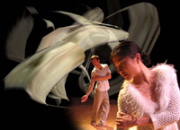

Welcome to ZeroOne San Jose: A Global Festival of Art on the Edge & the Thirteenth International Symposium of Electronic Art (ISEA2006) AUGUST 7-13, 2006
Over the second week of August, all of downtown San Jose -- self-proclaimed capital of California's Silicon Valley -- was transformed into an exhibition venue for electronic and new media art. This was the inaugural ZeroOne art festival, timed to coincide with the 13th annual symposium of the ISEA (Inter-Society for the Electronic Arts), an organization founded in the Netherlands in 1990 to foster "interdisciplinary academic discourse and exchange among culturally diverse organizations and individuals working with art, science, and emerging technologies."
Artists, Technologists, Media Theorists, Curators and Hundreds of Others Turn Out at San Jose City Hall for Presentation
SAN JOSE, CA (August 11, 2006) – Two prestigious, first-time awards were handed out this week at the opening ceremonies of ZeroOne San Jose: A Global Festival of Art on the Edge. Held this week in conjunction with the 13th International Symposium on Electronic Arts, ZeroOne San Jose showcases the work of approximately 200 artists from 24 countries.
Lynn Hershman Leeson received the first ZeroOne San Jose "Innovation that Matters Award," sponsored by IBM. The award of $7,500 acknowledges her career work. Some of Hershman’s work is in the Edge Conditions show at the San Jose Museum of Art.
Luther Thie and Eyal Fried received the first ZeroOne San Jose "Emerging Artist Award," sponsored by Adobe. The $5,000 award is for Acclair, which is currently showing in the City Hall Rotunda.
The jury for the Emerging Artists Award consisted of Christiane Paul, Adjunct Curator of New Media Arts at the Whitney Museum of American Art, Deborah Lawler-Dormer, Director of the Moving Image Centre in Auckland, New Zealand, and Adriane Wortzel, a leading new media artist based in New York.
The members of the jury were "convinced by the attention to detail in both the conceptual development and implementation of Acclair's corporate identity; the project's level of criticality with regard to issues of data processing and security, and its transgressive qualities, which, in their 'perversity,' reflect on the interconnection of security, marketing, and consumerism in our world of increasing dataveillance."
The jury also awarded Honorary Mention awards to PigeonBlog by Beatriz da Costa with Cina Hazegh and Kevin Ponto and SimVeillance by Katharine Isbister and Rainey Straus (on view through November 26 at the San Jose Museum of Art).
A "People's Choice Award," sponsored by the City of San Jose, was awarded on Saturday to Julian Bleecker for wifi.ArtCache. Voters cast their ballot via text message on a mobile phone: text “PC” + the Artwork Code listed in the Metro insert to 47647. There is no charge to vote, but text-messaging rates do apply. The People’s Choice Award is $2,500 cash.
Glenn Lovell. Lights, camera . . . interaction. Festival Presents Cinema 'On the Edge' that Demands More from the Audience Than Simply Eating Popcorn, San Jose Mercury News, August 8, 2006. link
"You meet a squirrel—he wants you to do karaoke. A South African artist wants to turn your skateboard into a musical instrument. What is going on? It's the ZeroOne festival, and it's a full-scale art attack on San Jose." Click here for full story.
Welcome to the ZeroOne San Jose/ISEA2006 ticketing and room reservations page.
Tickets can be purchased in person at the California Theatre, 345 S 1st St, San Jose, 95113 - (408) 295-9600, Symphony Silicon Valley, 467 South First Street, San Jose, CA 95113 - (408) 286-2600 and Parkside Hall, 180 Park Ave. San Jose, CA 95113 - (408) 792-4194
If you have questions you can also contact our box office manager at 408-286-2600 (don't be confused that it gets you to the Symphony Box Office - we are very fortunate to have them as one of our festival partners).
Click here to purchase exhibition and event tickets
The ZeroOne San Jose Festival will transform San Jose into the North American epicenter for the intersection of art and digital culture by showcasing the world's most innovative contemporary artists. ZeroOne San Jose is artists making art and using technology as a tool to do so. It is not technology for technology's sake. ZeroOne San Jose is a multi-dimensional, startling and brilliant audience event - with exhibits, live cinema, performances, workshops, and youth activities. All are one-of-a-kind, many never-before, only-here experiences. Here are some details about what you will find at ZeroOne San Jose: A Global Festival of Art on the Edge.
ZeroOne San Jose: A Festival of Art on the Edge wants you to come and experience the amazing, awe-inspiring, sometimes irreverent, totally incredible vista of the most innovative contemporary artists in the world. Read through this festival sampler, and click on any of the artists mentioned to learn more.
The familiar city-scape will become a new terrain where you can glimpse recorded images and secrets (Secrets, JD Beltran), carry a balloon with a surveillance camera and become a new map-maker in visual terms (Flying Tails, Jenny Marketou and Katie Salen), explore the afterlife, the most virtual of all worlds - a space beyond the compass of the human mind (MISSION ETERNITY, etoy.CORPORATION), watch nocturnal animals captured by video "traps" and see what happens on urban streets after dark (Nocturne, Colin Ives). At the ZeroOne San Jose Global Festival of Art on the Edge anything seems possible - an artist generates images using cosmic sounds to drive shifting shapes and colors (D-K San Jose, Akira Hasegawa); a blimp flies overhead - a rolling party with skateboarders glides past offering you the chance to put on headsets to listen in and join (Fete Mobile, Marc Tuters), and paper cups on a string can still be telephones (Paper Cup Telephone Network, Matthew Biederman, Adam Hyde, and Lotte Meijer).
From early afternoon till early morning, there will be a choice of events from electronic music to interactive theater to the "bandwidth stand" to night culture in the local clubs. Some highlights:
Ryoji Ikeda, C4I and commissioned North American premiere
C4I is both a concert and a film that uses data as its material and theme, highlighting the ways in which data shapes our understanding of the world. Video images of landscapes are progressively abstracted into a language of data. Facts, figures and diagrams are used in a montage with dazzling graphic impact. The text excerpts elegantly punctuate the on-screen projections. Blurring the lines between nature, science and philosophy, the work subtly and hypnotically suggests the convergence of the real and the virtual. The soundtrack synchronises perfectly with the graphical and video images to create a piece of undeniable power and beauty.
Monday, August 7, 8:00 pm California Theater
Builders Association, Super Vision
"The Builders Association is itself an innovator in multimedia theatre, using video, animation, sampled sounds and god-knows-what sorts of computerized gizmos to produce gorgeous illusions." — Village Voice
The Obie Award-winning performance company The Builders Association (Alladeen) and digital design studio dbox reveal a society in which "dataveillance" goes beyond anything Orwell ever imagined. Dive into this fresh, funny, and often disturbing combination of cutting-edge computer-generated animation, new video techniques, electronic music, and live performance. Super Vision probes three absorbing, intertwining, and all too-close-to-home stories drawn from the datasphere that explore the dangerous minefield of lives reduced to data.
Thurs-Fri, August 10-11, 7:30 pm Sat., August 12, 3:00 pm California Theater
Troika Ranch, 16(R)evolutions

"The primary effect is vivid abstract images, black through every shade of gray to white - broken stripes, horizontal and vertical; calligraphic ribbons; thin-lined sketches of structures that look like futuristic architectural renderings. The dancers, on a large stage, perform on and in front of these projected patterns, sometimes casting black or white shadows; the stripes and lines on their bodies are so crisp that they look like flowing costumes. As they move, their bodies create fluxes in the field, strange and fascinating humanoid shapes mirroring their movements." - New York Times
Sat.-Sun., August 12-13, 3:00 pm San Jose Repertory Theater
Adobe Systems Incorporated stepped forward as the first major corporate Visionary Sponsor of ZeroOne San Jose and will support the Emerging Artist Award. Through a grant, Adobe is also enabling the Festival Education Programs that will engage youth worldwide in the creation and exhibition of projects during the festival and throughout the year.
For Adobe, ZeroOne San Jose illustrates the innovation and creativity that drives Silicon Valley. It's about people using technology and digital tools to express themselves, to communicate their views on our society and to engage others in this exploration.
This celebration of the intersection of art and technology belongs in Silicon Valley and is a strategic opportunity for San Jose to become a true creative community.
Adobe revolutionizes how the world engages with ideas and information - anytime, anywhere and through any medium.
Learn more about how Mambo is licensed and how this affects you.
Mambo is released under the GNU General Public license (GNU GPL).The
GNU GPL provides for a person or persons to distribute Mambo for a fee,
but not actually charging for the software itself, because Mambo is
free. Mambo is free to share and change, but if you do change it in
anyway, can you also change the license and make it commercial? No! The
whole GPL is devoted to ensuring this does not happen. Copyright, a
much more refined and stringent law will prevent this as well.
So with regard to Mambo, the GPL and copyright:
You MAY distribute it and charge for that service. You MAY change it, add design and content to it and you MAY charge for that. You may NOT alter the license and you must NOT alter the copyright. You do NOT have to show a 'Powered by Mambo' graphic, as it not a copyright notice.
In other words, you must NOT pretend that Mambo is yours, and you must NOT charge people for Mambo.
Use Mambo to empower yourself and your clients by taking away the
'Black Magic' that surrounds putting content on the internet. Charge
for the value you add and not for the hard work that Miro, the Mambo
Development Team and the Mambo community have put into it.
Guidelines:
Mambo is "free" software released under the GNU General Public License (GPL).
The
word "free'' has two legitimate general meanings; it can refer either
to freedom or to price. When we speak of "free software'', we're
talking about freedom, not price. (Think of "free speech'', not "free
beer''.)
Free software is a matter of the users' freedom
to run, copy, distribute, study, change and improve the software. More
precisely, it refers to four kinds of freedom, for the users of the
software:
The freedom to run the program, for any purpose.
The freedom to study how the program works, and adapt it to your needs
Access to the source code is a precondition for this.
The freedom to redistribute copies so you can help your neighbour.
The freedom to improve the program, and release your improvements to the public, so that the whole community benefits.
Access to the source code is a precondition for this
1. What license is Mambo released under?
Mambo is released under the GNU GPL. A copy of this is included with your copy of Mambo and can also be found at http://www.fsf.org/licenses/gpl.html. Unofficial translations can also be found at http://www.fsf.org/licenses/translations.html.
2. Who owns the copyright to Mambo?
The
copyright to Mambo is held by Miro International Pty Ltd. Miro were the
original authors of Mambo and continue to actively support the project.
3. Are there any restrictions to your use of Mambo?
The GNU GPL grants you the freedom to use the software for whatever purpose you see fit.
4. May I charge money for Mambo?
The
GPL allows everyone the freedom to do this. The right to charge money
to distribute Mambo is part of the definition of "free" software.
When
people think of "selling software'', they usually imagine doing it the
way most companies do it: making the software proprietary rather than
free. So to avoid ambiguity you may you may charge to distribute the
software and any other service you provide along the way. You may not
charge for the software itself.
Remember if someone pays your fee the GPL also gives him or her the freedom to pass on the software with or without a fee.
5. May I remove "powered by Mambo, Copyright Miro etc" from the footer?
Yes you can although we would hope that you would retain it as a badge of honour.
6. May I remove the "copyright" statements from the source code to Mambo?
No, you must keep all copyright notices and credits in the source code.
7. Does the GPL mean that my website content is also GPL?
No.
The copyright and license of Mambo does not cover the content that you
create. Using Mambo does not place any restrictions, legally, on the
license or copyright you use for the content of your website.
8. I have modified Mambo for my own web site. Do I have to release these modifications?
The
GPL permits anyone to make a modified version for their own use without
the requirement to distribute it or pass on those changes to others.
9. I have made a modification (hack) to the Mambo core code. Do I have to release it under the GPL?
If
you chose to distribute your modifications to others it must be
released under the same terms that you received the original code. So
your modifications must be released under the GPL. You may of course in
this case modify the headers for the source code to include your own
copyright statement. If you do so you must clearly annotate in the
source code your amendments, changes or additions.
10. I have written a Component, Module, Template for Mambo. Do I have to release it under the GPL?
No The GPL allows you to write your own extensions for Mambo and to release those extensions under whatever license you chose.
11.
I have written a Component, Module, Template for Mambo and released it
under the GPL and I charge a fee for it, but website X is giving it
away for free.
If someone pays your fee the GPL also
gives him or her the freedom to pass on the software with or without a
fee. Placing a restriction on someone's use of GPL licensed software is
in breach of the GPL itself.
12. May I purchase a copy of Mambo, which has the copyright statements removed?
Although other GPL products may be available in this way Mambo is not.
13. I believe person A is in breach of the GPL what should I do?
You should report it. First check all the facts that you can and then report it by sending an e-mail to .
14. Who has the power to enforce the GNU GPL license of Mambo?
Only
the copyright holder, Miro International Pty Ltd, has the power to do
this. If the Mambo Development Team finds, or is made aware of, a
breach of the GPL they will report it to Miro for them to take any
necessary action.
Miro takes copyright infringement very seriously and will prosecute to the full extent of the law.
15.
Website X is using, or offering, my non-GPL Component, Module, Template
without my permission, or in breach of its license, can you help me?
Whilst
this is not within the remit or responsibility of Mambo we are willing
to act as intermediaries in this on your behalf. In most cases these
situations arise out of simple misunderstandings and can be settled
amicably. You should e-mail full details to .
DISCLAIMER
This
document refers to the software program Mambo, Version 4.x and all
subsequent versions, released under the GNU General Public License and
copyright Miro International Pty Ltd.
This document is subject to additions, modifications and other changes at any time without notice.
A
lawyer has not prepared this document. You should consult a lawyer
experienced in copyright, licensing and intellectual property for
clarification.